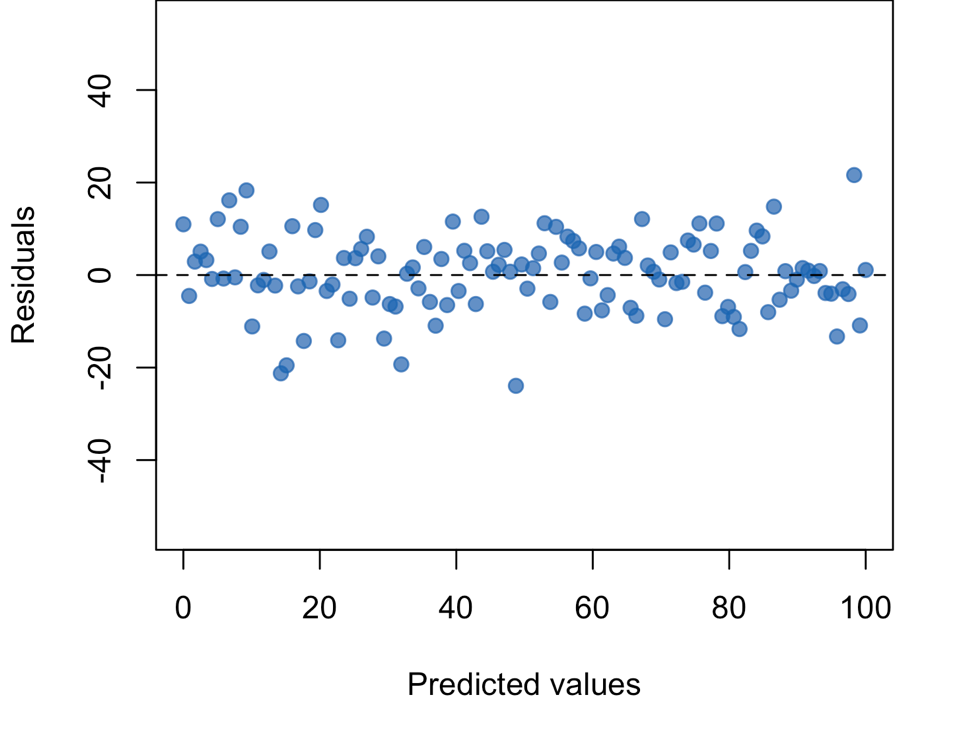
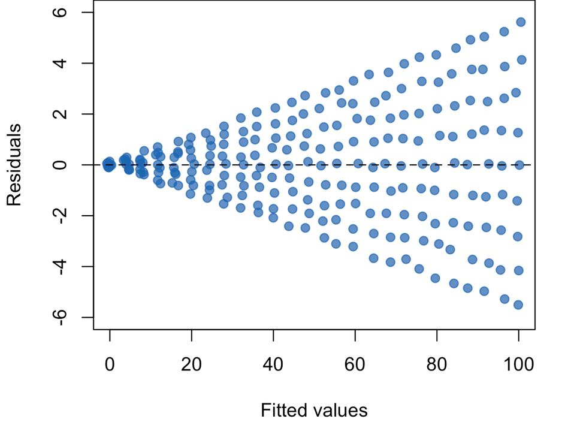
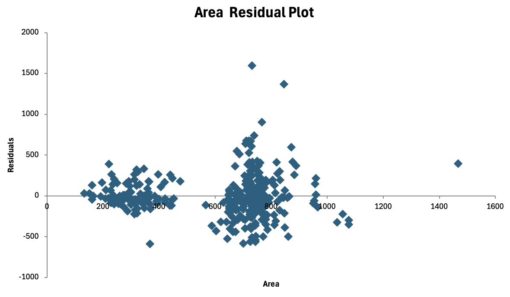

Estimate and interpret multiple regression models, test coefficients, evaluate fit and inspect residuals in Excel.
This deck adapts ETF1100 Week 9 seminar and tutorial materials. Source staff names, dates and Moodle directions are historical; use the current site schedule and Moodle for live arrangements.
Source: ETF1100 Week 9 seminar, page 1.
The source asked students to read Week 9 announcements, check a group-assignment correction, use a chatbot and discussion forum, attend consultation hours and contact the ETF1100 address for sensitive matters.
These ETF1100 arrangements are historical. Use the current ETX1100/ETX5900 site and Moodle for live instructions.
Source: ETF1100 Week 9 seminar, page 2.
The source builds on simple and multiple linear regression with numerical variables. It adds:
The worked case uses the RealEstate sheet in Week 9 Seminar Data.xlsx.
Source: ETF1100 Week 9 seminar, page 3.
By the end of this sequence, you should be able to test a slope for a linear relationship, judge regression fit, create dummy variables for categorical predictors and test the overall model.
We use Excel’s Data → Data Analysis → Regression output for the worked models.
Source: ETF1100 Week 9 seminar, page 4.
\widehat Y_i=\widehat\beta_0+\widehat\beta_1X_i.
Source: ETF1100 Week 9 seminar, page 5.
\widehat Y_i=\widehat\beta_0+\widehat\beta_1X_{1i}+\cdots+\widehat\beta_kX_{ki}.
The intercept predicts Y when every predictor is zero, which may not describe a meaningful case.
Each slope compares observations that differ by one unit in that predictor while the other included predictors are held fixed.
Source: ETF1100 Week 9 seminar, page 6.
For price in AUD thousands, the full model estimates
\widehat{Price}=86.841+47.426\,Beds+216.533\,Baths+14.544\,Cars+0.83127\,Area.
| Predictor | Estimate | SE | p-value |
|---|---|---|---|
| Beds | 47.426 | 22.866 | 0.0389 |
| Baths | 216.533 | 21.408 | <0.0001 |
| Cars | 14.544 | 22.774 | 0.5235 |
| Area | 0.83127 | 0.07574 | <0.0001 |
n=329; R^2=0.60424; adjusted R^2=0.59936; residual SE =265.16. The source page contains the full ANOVA and confidence-interval output.
Source: ETF1100 Week 9 seminar, page 7.
Source: ETF1100 Week 9 seminar, page 8.
For predictor X_k, test H_0:\beta_k=0 against one of:
Choose the alternative from the question before inspecting the estimate.
Source: ETF1100 Week 9 seminar, page 9.
t=\frac{\widehat\beta_k-0}{SE(\widehat\beta_k)},\qquad df=n-k-1,
where k is the number of predictors and the extra 1 counts the intercept. Excel’s regression output reports the estimate, standard error and t statistic.
For Beds in the full real-estate model, t=47.426/22.866\approx2.074 with df=324.
Source: ETF1100 Week 9 seminar, page 10.
The P-value column in Excel’s Regression output is for a two-sided slope test.
For Beds, Excel reports two-sided p=0.03886.
Source: ETF1100 Week 9 seminar, page 11.
| Step | Two-sided | One-sided |
|---|---|---|
| Hypotheses | \beta_k=0 vs \beta_k\ne0 | \beta_k=0 vs \beta_k>0 or <0 |
| Test statistic | \widehat\beta_k/SE(\widehat\beta_k) | same |
| Excel p-value | use as shown | halve only when estimate has claimed sign |
| Decision | compare p with \alpha | compare p with \alpha |
Conclude in terms of the relationship between the predictor and outcome, holding other included predictors fixed.
Source: ETF1100 Week 9 seminar, page 12.
Claim: more bedrooms are associated with a higher property price, holding the other predictors fixed.
H_0:\beta_{Beds}=0,\qquad H_1:\beta_{Beds}>0.
The estimate is positive (47.426) and Excel’s two-sided p is 0.03886, so the one-sided p\approx0.01943. At \alpha=0.05, reject H_0.
There is evidence of a positive conditional association with price. This observational model does not establish causation.
Source: ETF1100 Week 9 seminar, page 13.
Claim: car spaces have some conditional association with property price.
H_0:\beta_{Cars}=0,\qquad H_1:\beta_{Cars}\ne0.
Excel reports \widehat\beta_{Cars}=14.544 and two-sided p=0.5235. At \alpha=0.05, fail to reject H_0.
The data do not provide strong evidence of an additional linear contribution from Cars in this specification.
Source: ETF1100 Week 9 seminar, page 14.
For a two-sided coefficient test, a small p-value supports retaining a predictor. A large p-value invites a comparison with a model that omits it.
Here, Cars has p=0.5235. The source refits a model without Cars. Compare fit, changes in other slopes and business meaning before choosing the reduced model.
Source: ETF1100 Week 9 seminar, page 15.
After removing Cars, the source estimates
\widehat{Price}=94.295+51.363\,Beds+217.760\,Baths+0.83593\,Area.
| Statistic | Full model | Reduced model |
|---|---|---|
| R^2 | 0.60424 | 0.60375 |
| Adjusted R^2 | 0.59936 | 0.60009 |
| Residual SE (AUD 000s) | 265.16 | 264.92 |
The remaining coefficients change only slightly. This is a useful comparison, not an automatic rule to drop every large-p predictor.
Source: ETF1100 Week 9 seminar, page 16.
The source compares candidate models using:
Also compare adjusted R^2 and the business purpose when deciding between specifications.
Source: ETF1100 Week 9 seminar, page 17.
Write each observed value as fitted value plus residual:
Y_i=\widehat Y_i+e_i.
R^2 measures the proportion of total sample variation in Y explained by the fitted model. It lies between 0 and 1. Values near 1 mean a larger share is explained in the sample; they do not prove the model is useful for every prediction.
Source: ETF1100 Week 9 seminar, page 18.
SST=\sum_i(Y_i-\bar Y)^2,\quad SSR=\sum_i(\widehat Y_i-\bar Y)^2,\quad SSE=\sum_i(Y_i-\widehat Y_i)^2.
For least-squares regression with an intercept, SST=SSR+SSE.
R^2=\frac{SSR}{SST}.
Source: ETF1100 Week 9 seminar, page 19.
The source’s diagram restates the relationship
SST=SSR+SSE,\qquad R^2=\frac{SSR}{SST}=1-\frac{SSE}{SST}.
A model with a larger explained share has a larger in-sample R^2. Adding predictors can also raise R^2 without improving usefulness, so compare model complexity and residual behaviour.
Source: ETF1100 Week 9 seminar, page 20.
For the reduced Beds + Baths + Area model, R^2\approx0.604.
About 60% of the observed variation in property price is explained by this predictor set; about 40% remains unexplained by the model.
Adjusted R^2\approx0.600 accounts for predictor count and sample size. The source focuses mainly on R^2.
Source: ETF1100 Week 9 seminar, page 21.
Desirable residuals scatter around zero without a visible pattern and have roughly constant vertical spread.

Random scatter.

A widening fan needs attention.
Source: ETF1100 Week 9 seminar, page 22.

The residuals are roughly centred on zero, but their spread is larger for properties with greater area. Forecast uncertainty may therefore vary with property size.
Source: ETF1100 Week 9 seminar, page 23.
Do not enter categories as arbitrary numbers such as Water =1, Tea =2, Coffee =3: that would impose a numerical spacing that has no business meaning.
Instead, represent a category with a dummy variable taking 0 or 1.
Source: ETF1100 Week 9 seminar, page 24.
With Water, Tea and Coffee, use two dummies:
| Beverage | D_{Tea} | D_{Coffee} |
|---|---|---|
| Water (base) | 0 | 0 |
| Tea | 1 | 0 |
| Coffee | 0 | 1 |
For j categories and an intercept, include j-1 dummies. The omitted category is the base represented by all dummy values equal to zero.
Source: ETF1100 Week 9 seminar, page 25.
For a dummy D_k, \widehat\beta_k is the predicted difference between D_k=1 and the base category holding the other predictors fixed.
The intercept refers to the base category when other numerical predictors are zero.
Source: ETF1100 Week 9 seminar, page 26.
The source adds these 0/1 columns to the RealEstate sheet:
| New column | Excel formula |
|---|---|
| DSchoolZone | =IF(F2="Yes",1,0) |
| DAuction | =IF(G2="Yes",1,0) |
| DNew | =IF(H2="Yes",1,0) |
| DSubdivided | =IF(I2="Yes",1,0) |
Fill each formula down the data rows. Each dummy compares Yes with the base No category.
Source: ETF1100 Week 9 seminar, page 27.
The expanded model combines numerical and categorical predictors:
\begin{aligned} Price_i={}&\beta_0+\beta_1Beds_i+\beta_2Baths_i+\beta_3Area_i\\ &+\beta_4DSchoolZone_i+\beta_5DAuction_i\\ &+\beta_6DNew_i+\beta_7DSubdivided_i+\varepsilon_i. \end{aligned}
Use the numeric dummy columns as inputs in Excel’s Data Analysis → Regression output. Each dummy slope compares otherwise similar properties with and without that feature.
Source: ETF1100 Week 9 seminar, page 28.
The source’s expanded model reports:
| Predictor | Coefficient | p-value |
|---|---|---|
| Beds | 38.47 | 0.0684 |
| Baths | 175.76 | <0.0001 |
| Area | 0.9958 | <0.0001 |
| DSchoolZone | 157.70 | <0.0001 |
| DAuction | 0.77 | 0.9783 |
| DNew | 196.78 | <0.0001 |
| DSubdivided | -6.20 | 0.9352 |
The source considers removing DAuction and DSubdivided, whose p-values are very high.
Source: ETF1100 Week 9 seminar, page 29.
After omitting DAuction and DSubdivided, retain Beds, Baths, Area, DSchoolZone and DNew.
| Predictor | Coefficient (AUD 000s) | p-value |
|---|---|---|
| Beds | 38.60 | 0.0654 |
| Baths | 175.81 | <0.0001 |
| Area | 1.0066 | <0.0001 |
| DSchoolZone | 157.56 | <0.0001 |
| DNew | 195.85 | <0.0001 |
Holding other features fixed, the model associates school-zone status with about AUD 157,555 higher price and new status with about AUD 195,848 higher price than their base categories.
Source: ETF1100 Week 9 seminar, page 30.
The overall test asks whether the predictor set has any linear relationship with Y:
H_0:\beta_1=\cdots=\beta_k=0,\qquad H_1:\text{at least one slope is nonzero}.
F=\frac{SSR/k}{SSE/(n-k-1)}.
Excel reports the F statistic and Significance F in the ANOVA block. Reject H_0 when its p-value is below \alpha.
Source: ETF1100 Week 9 seminar, page 31.
For the reduced Beds, Baths and Area model, the source reports F\approx165.060 and Significance F =5.260\times10^{-65}.
At \alpha=0.05, reject H_0:\beta_{Beds}=\beta_{Baths}=\beta_{Area}=0.
There is evidence that at least one of these predictors has a linear relationship with price. The overall test does not say every individual coefficient is significant.
Source: ETF1100 Week 9 seminar, page 32.
Source: ETF1100 Week 9 seminar, page 33.
The ETF1100 source asked students to attend a next-day Zoom workshop, their allocated tutorial and an ETF1100 tutorial quiz.
These are historical source arrangements. For this intensive, check the current Week 6 page and Moodle for the class exercise and quiz instructions.
Source: ETF1100 Week 9 seminar, page 34.
The source asked students to sit with their assignment group, check a correction to a group-assignment task, review the rubric and note a peer-evaluation submission.
These are historical ETF1100 instructions. Follow the current ETX1100/ETX5900 schedule and Moodle for live arrangements.
The Week 9 tutorial revisits regression and a post-workshop quiz, then works through a tutor-led example and a tutorial quiz.
For the current Week 6 class, use the tutorial example to practise a multiple regression in Excel after the seminar’s model-evaluation concepts.
The population model relates a numerical outcome Y_i to one input X_i:
Y_i=\beta_0+\beta_1X_i+\varepsilon_i.
\beta_0 and \beta_1 are population parameters. The error \varepsilon_i captures the part of Y_i not described by the line.
Estimate the population coefficients from sample data:
\widehat Y_i=\widehat\beta_0+\widehat\beta_1X_i,\qquad e_i=Y_i-\widehat Y_i.
The fitted value predicts an observation using the estimated line. The residual is observed minus fitted value, in the units of Y.
Choose the fitted coefficients to minimise the sum of squared residuals:
SSE=\sum_{i=1}^{n}e_i^2=\sum_{i=1}^{n}(Y_i-\widehat Y_i)^2.
Squaring prevents positive and negative residuals from cancelling and penalises large misses more heavily.
In \widehat Y_i=\widehat\beta_0+\widehat\beta_1X_i:
A positive slope rises with X; a negative slope falls with X.
In real estate, Area, Beds, Baths and Cars can move together. A simple regression of Price on Area can attribute to Area variation also associated with the omitted property features.
Omitting a relevant predictor may bias a slope estimate. Multiple regression lets us compare properties at fixed values of the other included features, although it does not by itself prove causation.
\widehat Y_i=\widehat\beta_0+\widehat\beta_1X_{1i}+\widehat\beta_2X_{2i}+\cdots+\widehat\beta_kX_{ki}.
\widehat\beta_k is the predicted change in Y for one more unit of X_k, holding the other included predictors fixed.
The intercept refers to all predictors equal to zero and may not represent a realistic case.
The historical quiz gives the correlation between Waiting_time and Travel_time as 0.402 (three decimal places). It then asks which statement is true:
Use the travel-time data to compare the two days; the overall correlation alone does not answer this.
Which source statements are false? Select all that apply.
Check the overall and within-day correlations before deciding.
In a simple linear relationship, what does the slope represent?
Use the YOUR DATA sheet in Week 9 Tutorial Data.xlsx:
Travel_time on Waiting_time in Excel’s Data → Data Analysis → Regression.No_classes.The worked tutorial workbook contains source output for cross-checking.
The multiple-regression output estimates the No_classes slope at about 2.400 minutes per class.
Holding waiting time fixed, one more class is associated with about 2.4 minutes more travel time on average.
The source’s 95% confidence interval is approximately -0.138 to 4.939 minutes. Because it includes zero, the two-sided 5% test does not find strong evidence of a nonzero conditional slope.
For a student with 2 classes and 10 minutes waiting time, the worked model predicts about 47.009 minutes of travel time.
For an eight-minute increase in waiting time at fixed number of classes, the estimated change is 8\widehat\beta_{Waiting}\approx\mathbf{12.334} minutes.
Use the full Excel coefficients for the exact prediction before rounding.
The ETF1100 source directed students to a Week 9 tutorial quiz in Moodle and to complete a group-assignment task.
These are historical source activities. Use the current ETX1100/ETX5900 Week 6 schedule and Moodle for the live class exercise and quiz.